Beim Erfassen von Daten begegnen einem in der WinLine verschiedene Arten von Optionsfeldern. Je nach Art des Optionsfeldes können verschieden Eingaben gemachten werden:
Ø Die Überschrift
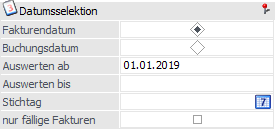
Bei vielen Überschriften wird ein Icon im rechten Bereich der Zeile dargestellt. Bei Anwahl wird die Überschrift mit dessen zugeordneten Feldern zugeklappt, wobei es insgesamt 3 Modi gibt. Durch das Zuklappen werden ggfs. darunterliegende Überschriften und / oder Tabellen nach oben verschoben.
Hinweis
Ein Zuklappen ist nur möglich, wenn der Fokus nicht in einem der zugeordneten Feldern liegt.
ü Bearbeitungs-Modus
Es stehen alle Eingabefelder zur
Verfügung.
ü Lese-Modus
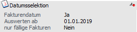
ü Ausblend-Modus
Es werden alle Felder
ausgeblendet.
Ø Der Radiobutton
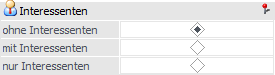
Der Radiobutton erlaubt einem eine Auswahl aufgrund von vorgegebenen Optionen zu treffen. Durch Anklicken wird das Optionsfelde aktiviert und durch ein schwarzes Mittelfeld dargestellt. Bei diesen Optionsfeldern kann nur eine Selektion getroffen werden.
Ø Die Checkbox
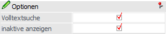
Die zweite Art von Optionsfeldern sind die viereckigen Optionsfelder oder auch Checkboxen genannt. Durch Anklicken mit der Maus oder durch Drücken der LEER-Taste wird sie aktiviert und angehakt dargestellt. Hierbei ist es grundsätzlich möglich, mehrere Punkte anzuhaken.
Ø Die Auswahlliste
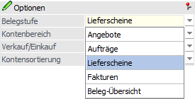
Die Auswahlliste wird durch ein Pfeil-nach-Unten-Icon dargestellt und kann durch einen Mausklick auf dieses Icon bzw. durch Drücken der Tastenkombination ALT + Pfeil-nach-Unten geöffnet werden. Aus der nun offenen Liste kann eine der vorgeschlagenen Optionen ausgewählt werden, welche dann durch Drücken der Enter-Taste übernommen wird.
Sind die Einträge, welche in der Auswahlliste angezeigt werden, bekannt, können die ersten Buchstaben des Eintrages eingegeben werden. Dadurch wird der entsprechende Eintrag direkt vorgeschlagen.
Ø Der Matchcode
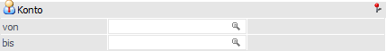
Der Matchcode erlaubt die Suche nach allen verfügbaren Datensätzen pro Objekt, die in das Ausgangsfeld eingetragen werden können (z. B. Kontonummer, Artikelname, usw.)
Grundsätzlich gibt es zwei Möglichkeiten, nach einem Begriff zu suchen:
ü Zuerst den Matchcode aufrufen und
erst dann den Suchbegriff eingeben
Nach Aufruf des Matchcodes erscheint ein
neues Fenster. Hier kann der Suchbegriff eingeben werden, wobei pro Matchcode in
unterschiedlichen Felder (in Abhängigkeit des Objekts) gesucht wird. Zusätzlich
stehen meistens auch noch weitere Suchoptionen (neben dem Suchbegriff) für eine
optimale Suche zur Verfügung.
Nach dem Start der Suche (Enter-Taste und oft
auch F5) wird die Suchergebnistabelle gefüllt, aus welcher dann ein Datensatz
gewählt werden kann (per Doppelklick oder Enter-Taste).
Hinweis
Wird nur ein Datensatz gefunden, der dem Suchkriterium entspricht, wird dieser sofort in die Erfassungsmaske übernommen.
ü Zuerst den Suchbegriff eingeben
und dann den Matchcode aktivieren
Nach Aufruf des Matchcodes wird sofort nach
dem zuvor eingegebenen Begriff gesucht. Wird nur ein passender Eintrag gefunden,
so wird dieser sofort in die Eingabemaske übernommen. Werden mehrere Einträge
gefunden, so werden diese in der Suchergebnistabelle angezeigt. Aus dieser kann
dann ein Datensatz ausgewählt werden (per Doppelklick oder Enter-Taste).
Für beide Varianten gibt es verschiedene Möglichkeiten, den Matchcode aufzurufen:
ü Doppelklick in das Feld oder Taste
F9
Es wird der Matchcode geöffnet. Wurde in das Ausgangsfeld bereits etwas
hinterlegt, dann wird dieses als Suchbegriff in den Matchcode übergeben und die
Suche direkt gestartet.
ü Klick auf das Lupen-Symbol oder
Tastenkombination SHIFT + F9
Es wird der Matchcode geöffnet. Wurde in das
Ausgangsfeld bereits etwas hinterlegt, so wird dieses ignoriert, d.h. es wird
der Match ohne Suchbegriff geöffnet und keine Suche automatisch gestartet.
Ø Die Beschreibung
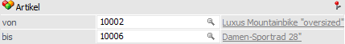
Neben Eingabefeldern steht oft eine Beschreibung der Eingabe zur Verfügung. Wenn die Beschreibung unterstrichen dargestellt wird, so verbirgt sich dort ein DrillDown, d.h. per rechter Maustaste stehen eine Reihe von weiteren Informationen zur Verfügung.
Ø Das Datumsfeld
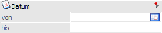
In vielen Bereichen werden Datumseingaben gefordert, wobei es für die Eingabe des Datums verschiedene Möglichkeiten gibt:
ü 16-10-23 oder 16-10-2023
Die
Eingabe erfolgt mit Bindestrich als Trennzeichen.
ü 16.10.23 oder 16.10.2023
Die
Eingabe erfolgt mit Punkt als Trennzeichen.
ü 161023 oder 16102023
Die
Eingabe erfolgt ohne Trennzeichen.
ü 1610
Es wird nur das Tagesdatum
(Tag und Monat) eingegeben. Die WinLine ergänzt die Jahreszahl automatisch mit
der Jahreszahl des Systemdatums.
ü 16
Es wird nur das Tagesdatum
eingegeben. Die WinLine ergänzt den Monat und das Jahr um die aktuellen
Systeminformationen (am 16. Oktober 2023 wird aus der 16 der 16.10.2023, am 17.
November 2023 wir aus der 16 der 16.11.2023).
ü + / - Taste
Durch Drücken der +
und - Taste kann das Datum tageweise verändert werden.
ü Doppelklick oder Taste F9
Durch
einen Doppelklick auf das Datumsfeld oder Anwahl der Taste F9 wird ein Kalender
geöffnet, aus welchem man ein Datum übernehmen kann. In der ersten Spalte wird
die jeweilige Kalenderwoche angezeigt. Das Systemdatum wird mit einem roten
Kreis versehen dargestellt.
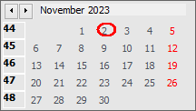
ü Taste F3
Durch Drücken der
Taste F3 wird das aktuelle Systemdatum in das Datumfeld übernommen.
Hinweis
In allen Fällen wird das Datum in die Form TT.-MM-.JJJJ umgewandelt.
Neben diesen manuellen Angaben eines Datums steht in vielen Datumsfeldern der Button "Datumsvorgabe" zur Verfügung. Mit dessen Hilfe kann aus einer Auswahlliste ein Zeitraum bzw. ein Zeitpunkt gewählt werden. Das Öffnen der Auswahl kann hierbei per Klick auf den Button oder "STRG + Pfeil-nach-unten"-Taste erfolgen.
ü  Zeitraum
Zeitraum
Mit Hilfe dieses Buttons kann
bei vielen "von / bis"-Datumsfeldern ein Zeitraum ausgewählt werden. Folgende
Vorgaben stehen hierbei zur Verfügung:
ü Heute
ü aktuelle Woche
ü letzte 7 Tage
ü letzte 14 Tage
ü aktueller Monat
ü 1. Quartal
ü 2. Quartal
ü 3. Quartal
ü 4. Quartal
ü aktuelles Jahr
ü Vorjahr
ü Alle
Hinweis
Nach der Auswahl eines Zeitraums wird das "bis"-Datumsfeld automatisch für eine weitere Eingabe gesperrt. Eine definierte Vorgabe kann anschließend durch eine Interaktion im "von"-Datumsfeld (+-Taste, Entf-Taste, F3-Taste, manuelle Datumseingabe, etc.) aufgehoben werden, so dass das Datumsfeld "bis" wieder beschreibbar wird.
ü Zeitpunkt
Mit Hilfe dieses Buttons kann
in ausgewählten Datumsfeldern ein Zeitpunkt ausgewählt werden. Folgende Vorgaben
stehen hierbei zur Verfügung:
ü heute
ü gestern
ü Anfang der Woche
ü Ende der Woche
ü Anfang der letzten Woche
ü Ende der letzten Woche
ü Anfang des Monats
ü Ende des Monats
ü Anfang des letzten Monats
ü Ende des letzten Monats
Hinweis
Eine definierte Vorgabe durch eine Interaktion im Datumsfeld (+-Taste, Entf-Taste, F3-Taste, manuelle Datumseingabe, etc.) aufgehoben werden.
Ø Das Umrechnungs-Betragsfeld
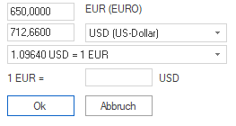
Bei allen Betrags-Eingabefeldern besteht die Möglichkeit den Betrag in Landeswährung 1 oder in Landeswährung 2 einzugeben. Voraussetzung dafür ist, dass die beiden Landeswährungen im Mandantenstamm hinterlegt wurden.
Durch Anklicken des -Buttons wird hierfür ein eigenes Fenster geöffnet, wo der Betrag in Landeswährung oder wahlweise in der zweiten Währung eingegeben werden kann.
ü
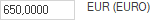
- Landeswährung 1
ü
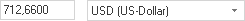
- Landeswährung 2
ü - Umrechnungskurs
Zusätzlich wird der
Umrechnungskurs für diese Währung angezeigt. Mit dem Umrechnungskurs wird dann
die zweite Währung in die erste Währung umgerechnet, wobei immer die
Landeswährung 1 in das Betragsfeld übernommen wird.
ü - manuelle Umrechnungskurs
An dieser
Stelle kann ein manueller Umrechnugskurs angegeben werden. Dieser übersteuert
temporär den Umrechnuhfskurs aus dem Programm "Fremdwährungscode".
Achtung
Dieses Fenster dient nur zur Umrechnung von Landeswährung 1 in Landeswährung 2 und umgekehrt. Wenn über diese Funktion ein Betrag eingegeben wird, dann bedeutet das nicht, dass dann auch die Währungsinformation mitgespeichert wird. Z.B. LW 1 = EUR, LW 2 = USD, der Betrag wird in USD eingetragen und in EUR umgerechnet. Es wird nicht gespeichert, wie viel USD ursprünglich eingetragen wurden.